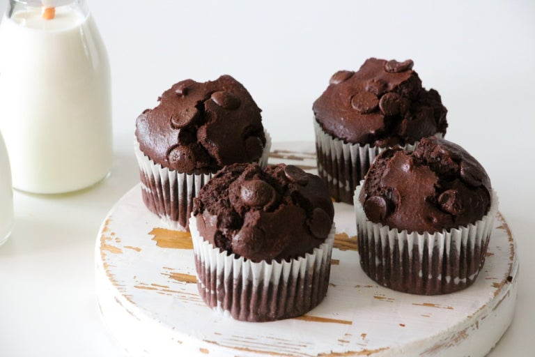

72% 다크 초콜릿으로 만들고 생크림을 넣어 풍미가 가득하고 부드러운 초코 컵케이크
| 재료 | 계량 | |
|---|---|---|
| — 초코 컵케이크 | ||
| 생크림 | 100 g | |
| 설탕 | 80 g | |
| 계란 | 1개 | |
| 박력분 | 80 g | |
| 코코아파우더 | 20 g | |
| 베이킹파우더 | 1 tsp | |
| 초코칩 | 60 g | |
오븐을 160°C로 예열하고 컵케이크틀에 컵케이크유산지를 깔아줍니다.
박력분, 코코아 파우더, 베이킹파우더를 함께 체에 두 번 내려 고르게 섞어 둡니다.
달걀과 설탕, 생크림을 섞어준다.
습식 재료와 건조 재료를 넣고 섞어준다.
반죽을 머핀팬에 80%부어주고 위에 초코칩을 뿌려줍니다.
180도 오븐에 15분간 구워주고 식혀준다.